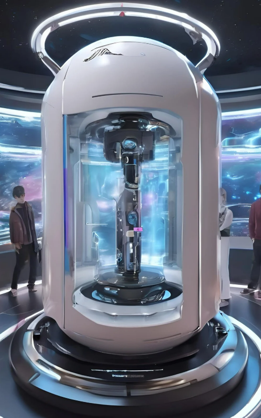

テーマ
「朝、起床したときにわくわくする。起きるのが楽しみになる。」

- 円筒形の装置の内部に3Dキャラクターを投影し、指定した時間に起こしてくれる目覚まし時計
- 朝起きるのが苦手な人、アニメや美少女キャラクターが好きな人がターゲット
- ホログラム技術などの最新技術を活用し、新しい体験をすることで気持ちよくストレスフリーな朝を実現
装置内に3Dキャラクターを浮かび上がらせるため、リアプロジェクション技術を採用し、内部のプロジェクターで映像を立体的に表示する工夫をしました。この技術により、キャラクターが装置の中に存在するような臨場感を作り出し、未来的な雰囲気を演出しました。 また、目覚まし機能だけでなく、天気予報や予定などを教える機能も搭載し、未来のスマートデバイスのような多機能性を意識しました。